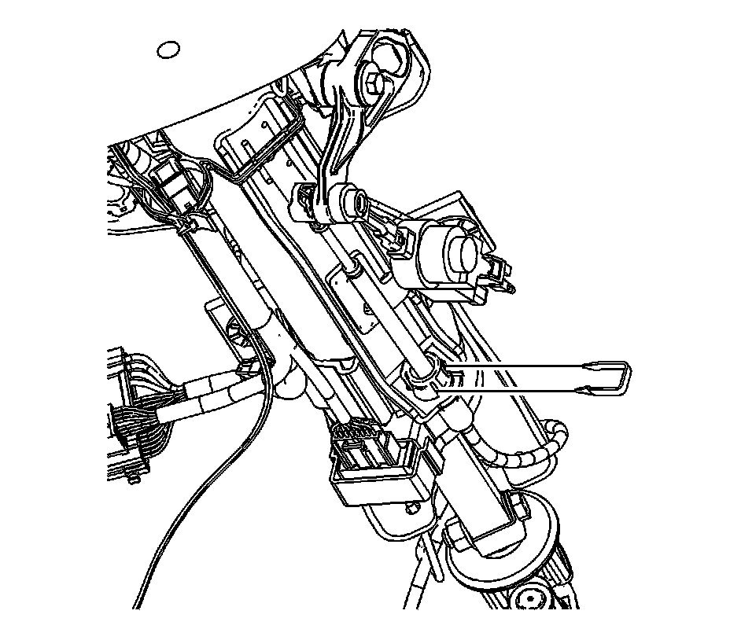
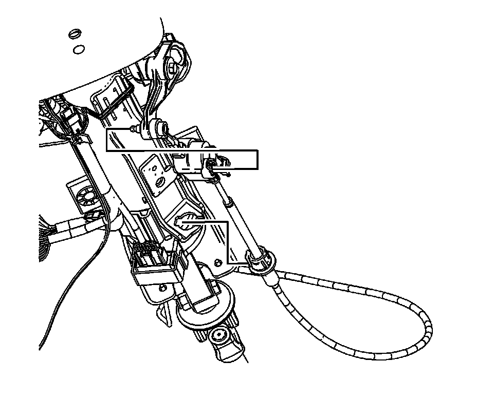
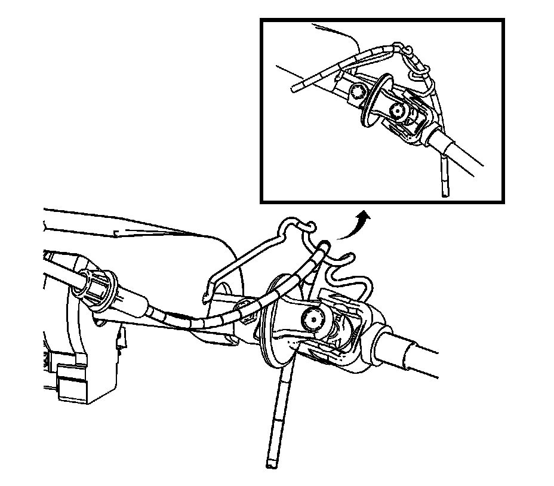
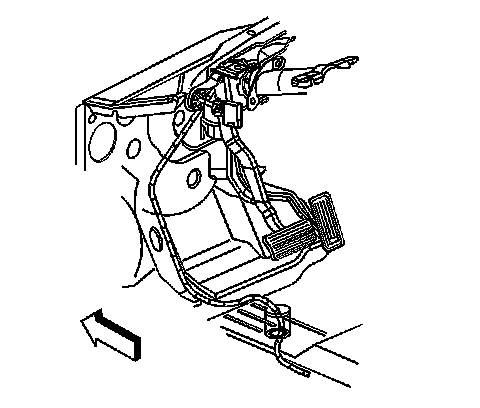
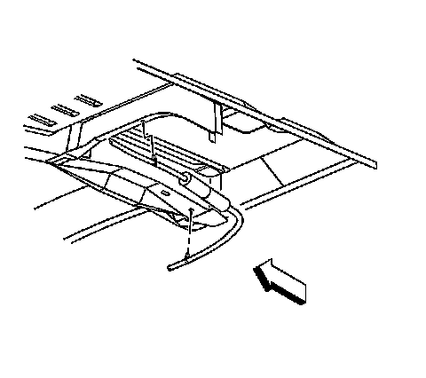
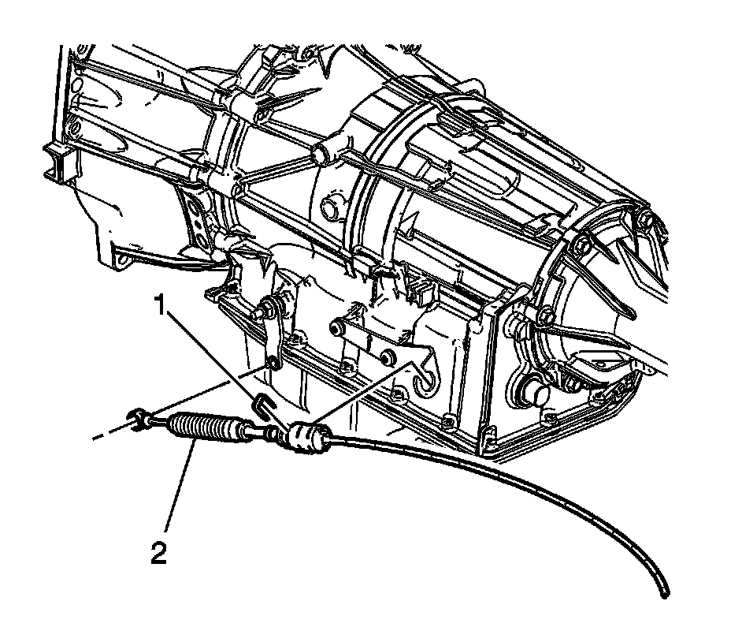

Automatic Transmission Range Selector Lever Cable Replacement
Automatic Transmission Range Selector Lever Cable Replacement
Removal Procedure

1. Position the steering column shift lever to the park position.
2. Remove the instrument panel knee bolster.
3. Remove the driver seat.
4. Pull back the carpet and insulation around the driver area.
5. Remove the retainer securing the cable to the steering column.

6. Remove the cable end from the steering column ball stud.
7. Depress the tangs and remove the cable from the steering column bracket.

Important: Avoid unnecessary twisting/bending of the range selector cable when removing the cable from the support.
8. Remove the range selector cable from the support.

9. Remove the cable grommet from the floor panel.
10. Raise and suitably support the vehicle. Refer to Lifting and Jacking the Vehicle.

11. Remove the clips on the cable from the floor panel reinforcement.
12. Ensure the transmission manual shaft is positioned in mechanical park.
13. Remove the cable clip on the transfer case, if equipped.

14. Remove the range selector cable (2) from the transmission range selector lever ball stud.
15. Remove the retainer (1) that secures the cable to the bracket.
16. Depress the tangs and remove the cable from the bracket.
17. Remove the transmission range selector cable from the vehicle.
Installation Procedure
1. Install the transmission range selector cable to the vehicle.
2. Ensure that the transmission manual shaft lever is in the mechanical park position.
3. Align and install the range selector cable (2) to the bracket.
4. Install the retainer (1) that secures the cable to the bracket.
5. Install the range selector cable end to the transmission range selector lever ball stud.
6. Install the cable clip on the transfer case, if equipped.
7. Install the clips on the cable to the floor panel reinforcement.
8. Lower the vehicle and ensure that the steering column shift lever is still in the park position.
9. Install the cable grommet to the floor panel.
Important: Avoid unnecessary twisting/bending of the range selector cable when installing the cable to the support.
10. Install the range selector cable to the support.
11. Install the cable to the steering column bracket.
12. Ensure the tangs fully engage into the steering column bracket.
13. Install the cable end to the steering column ball stud.
14. Install the retainer securing the cable to the steering column.
15. Position the carpet and insulation around the driver area.
16. Install the driver seat.
17. Install the instrument panel knee bolster.
18. Test the transmission for proper shift operation.
19. If all of the gear positions cannot be achieved, adjust the cable. Refer to Range Selector Lever Cable Adjustment.